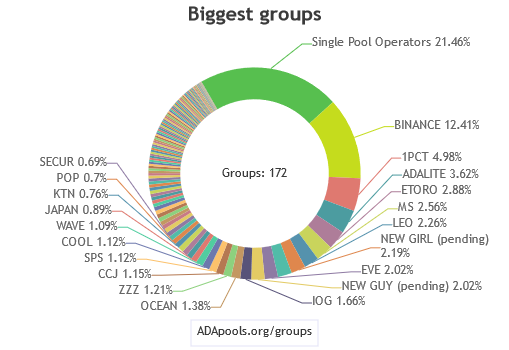

Why this pool?
By running a significant number of pools some exchanges can gain enough power to control the network. Decentralization can prevent this from happening.
Decentralization chart of Cardano ecosystem

🅰🅳🅰- Staking Ticker [ALoop]
Pool ID:
297b5acd8b90df8a1bfd98aa1a61f323b87fead4b8a2b55f2fb83ce6
Mission Statement:
Provide a secure and reliable foundation for Cardano-Network as a Single Pool Operator for true decentralization.
20% of pool rewards will be donated to AbleGamers #SoEveryoneCanGame.
Find out how I got involved with AbleGamers
The Story
There are very few people who have created a top 10 cryptocurrency.
Charles Hoskinson is one of them.
Cardano - Simply Explained. Cardano (ADA) is gaining a lot of traction, but what makes it so special?
Staking and delegating for beginners.
A step-by-step guide by
Cardano Foundation
Thank you for visiting. Take a seat and stay with us. Please consider delegating to a small community pool to help decentralization.
The story starts in 2019.
"I love video games, and my daily drive is the Sci-Fi Hardcore MMORPG EVE Online.
At the 2019 EveVegas meetup, the Eve Online developer CCP, organized a Fundraiser for the benefit of AbleGamers Foundation.
I attended the Fundraiser and this is where I learned about AbleGamers Foundation, their mission, who they are and what they do.
I think with Covid pandemic we all realized, the negative effects of social isolation. Now, imagine impaired people who live their entire life in isolation.
Gaming can make their lives better and fun and I believe this is the perfect time to raise awareness and promote AbleGamers mission.
You can join this pool and be part of its mission, or you can help by making donations on their website here: #SoEveryoneCanGame"
The AbleGamers Foundation (also known as The AbleGamers Charity) is an American nonprofit organization and foundation dedicated to improving accessibility in the video game space, enabling more people with disabilities to be able to play video games. The charity creates resources, assists individuals in getting the peripherals they need, runs scholarships, and works with video game publishers and video game companies to improve accessibility.
"People with disabilities are at a heightened risk of social isolation, and AbleGamers knows that video games can be the perfect gateway to community participation, lifelong friendships, and unforgettable shared experiences. AbleGamers Mission: Creating opportunities that enable play in order to combat social isolation, foster inclusive communities, and improve the quality of life for people with disabilities. We’re using the power of video games to bring people together, improving quality of life with recreation and rehabilitation."
Official Member of Ardana Stake Pool Alliance (ASPA) partners.
Ardana & Cardano
Official Member of Ardana Stake Pool Alliance (ASPA) partners.
It's official, posted in ASPA Partner Focus #4 — Announcing the Latest Stake Pool Operators Partnering with Ardana. This is a major step for us, colaborating with the First All-in-One Stablecoin Ecosystem Built on Cardano, an on-chain asset-backed stablecoin and a decentralized stable-asset DEX. We are looking forward in our colaboration with Ardana.
Alonzo
Nodes Upgrade
I'm glad that the upgrade went smooth without erros, compiling the nodes took around 1h. And they are running fine, purring like a kitty. xD
PIGY Token is Here
About PIGY Token
PIGY Token is a Cardano based cryptocurrency that is distributed by SPO as additional rewards to delegators.
There are around 2,600 Stake Pool Operators right now. Over 30% of these operators have never minted a single block, which translates to about 1,000 of them. Cardano Foundation and IOG are currently doing their best to ensure the operators of small pools survive, but they only have a limited amount of resources. We as a community can help these blockless stake pools by giving incentives so the delegators are willing to move around to a smaller pool and keep moving around the pools so that it will help the small pools survive.
AdaLoop is now part of Mission Driven Pools Group.
Member of MDP, aiming to give back a portion of their earnings for a good cause.
In doing so, we are attracting delegators adhering to our personal convictions, morals, beliefs and values.

About MDP: "Mission Driven Pools [MDP] is a collective of mission-based Cardano stake pool operators."
Current goals:Encouraging other operators to give back Help organizations across the world Help spread the Cardano mission Cross Marketing
Delegation
About Delegation.
The easiest and fastest way to delegate from your computer and mobile it’s Yoroi wallet.
For more tech savvy Daedalus will be a better choice, you are running a full Cardano Node and you are part of Cardano’s ecosystem.
Cardano Single Pool Alliance
It's official. AdaLoop is now part of Cardano Single Pool Alliance (SPA)
"Who Are the members?
Cardano Single Pool Alliance is a loosely connected group of separate stake pool operators who have all vowed to run a single stake pool for the sole purpose of providing the Cardano ecosystem with True Decentralization. Each member has unselfishly decided to forego the potential profit of running a stake pool in the hope of making Cardano one of the most resilient blockchain against any colluding or coordinated malicious attack from national governments, hackers, or the creator of the protocol. Each member strives to make his/her single pool profitable. However, when a respective stake pool reaches saturation, its stake pool’s operator channels help another SPA pool to reach saturation. An egalitarian decentralization of stake pools directly strengthens the resiliency of the Cardano network. "
"Who We Are as A Group?
As a group, the Cardano Single Pool Alliance is camaraderie, not an organized entity, of single pool operators. CSPA has no central authority or leadership. As a group, we aspire to an ideal – that only an abundance of single-owner-single-pool can shield Cardano against any attack. We are bonded together by a single focus – that each stake pool operator should operate a single stake pool in the Cardano ecosystem.
We are not a corporation, a bureaucratic organization, a censorship entity, a Cardano policing agency, or a non-profit. Willing and caring SPO volunteers, instead of paid leaders, runs and operates The Cardano Single Pool Alliance. We have no leadership, board members, or CEO. We are a group of SPO with mutual trust defined by our voluntarism to accomplish a goal. To achieve our goals and maintain some sense of structure, we do have a “Participation of the Willing.” If you are willing to tackle a task on behalf of the CSPA, you are part of the core volunteer structure."
#ThisIsTheWay #Cardano
Visit Single Pool Alliance for more info and why SPA it's important
Questions?
You have Questions?
Feel free to ask in our pool channel. The easiest and fastest way to get your answers [ALoop] Telegram Channel
Single Pool Alliance
AdaLoop, ready to apply for membership with Single Pool Alliance
"Cardano Single Pool Alliance" is a connected group of separate stake pool operators who have all vowed to run a single stake pool to provide True Decentralization to Cardano ecosystem."
AdaLoop New Face
Pool Website v2 released today with better navigation and graphics. Hand editing. It will be more convenient to use WordPress, but for security reasons, php bugs and sql injections, I prefer manual updates.